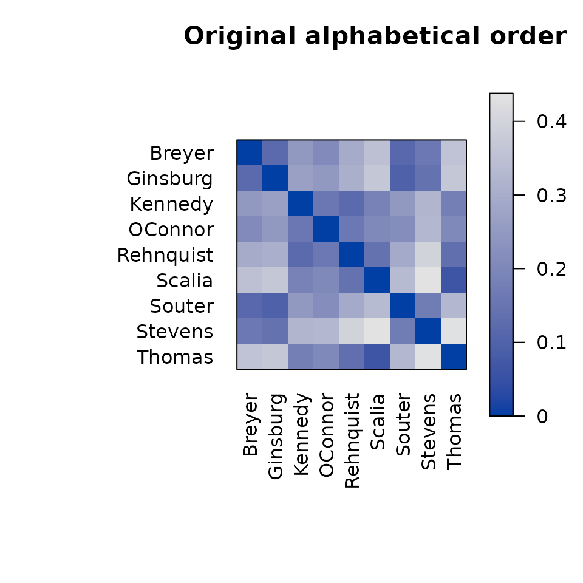
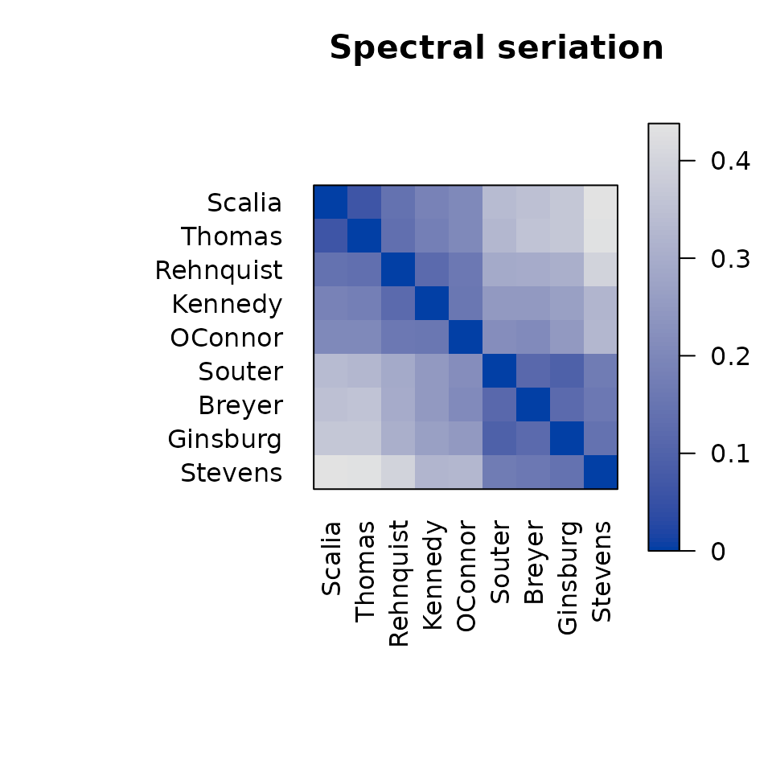
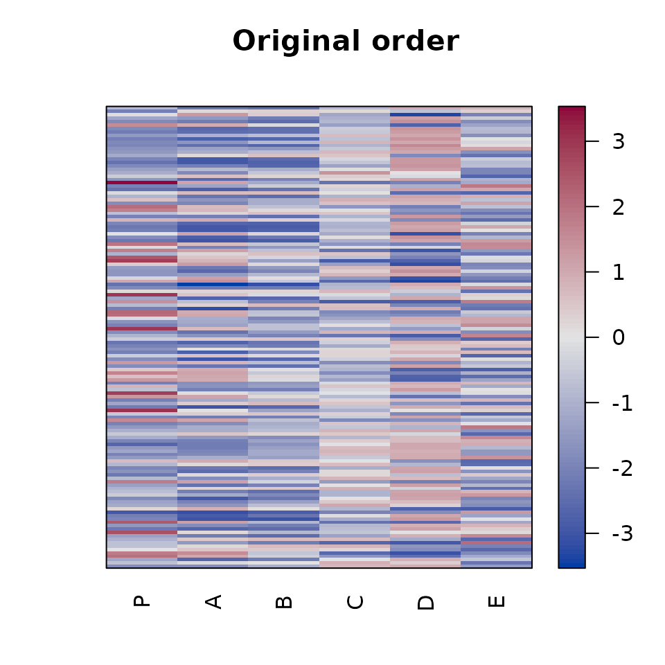
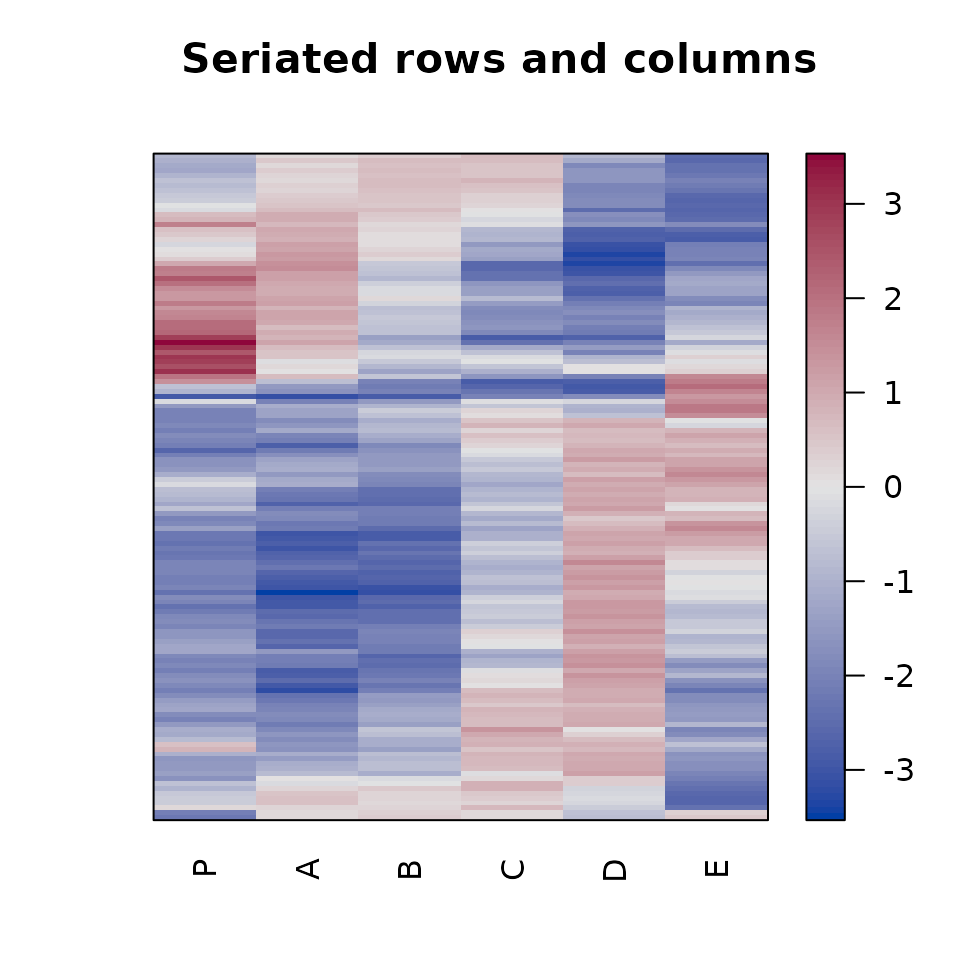

Seriation arranges objects in a linear order so that related objects are close to one another. Reordering does not change the data; it changes only how rows, columns, or objects are presented. A useful order can expose clusters, gradients, and other structure that is difficult to see in the original ordering.
Package seriation provides a common interface to many
seriation methods and tools for applying, assessing, and visualizing the
resulting orders. This vignette introduces the basic workflow:
- prepare a dissimilarity or data matrix,
- find an order with
seriate(), - inspect or apply the order, and
- visualize and assess the result.
Installation
Install the released version from CRAN:
install.packages("seriation")Load the package in each R session where you want to use it:
Seriate a dissimilarity matrix
We first use the SupremeCourt data. It contains pairwise
disagreement probabilities for nine U.S. Supreme Court justices. Because
these values are dissimilarities, we convert the symmetric matrix to an
R dist object.
data("SupremeCourt")
d <- as.dist(SupremeCourt)
d
#> Breyer Ginsburg Kennedy OConnor Rehnquist Scalia Souter Stevens
#> Ginsburg 0.11966
#> Kennedy 0.25000 0.26709
#> OConnor 0.20940 0.25214 0.15598
#> Rehnquist 0.29915 0.30769 0.12179 0.16239
#> Scalia 0.35256 0.36966 0.18803 0.20726 0.14316
#> Souter 0.11752 0.09615 0.24790 0.22009 0.29274 0.33761
#> Stevens 0.16239 0.14530 0.32692 0.32906 0.40171 0.43803 0.16880
#> Thomas 0.35897 0.36752 0.17735 0.20513 0.13675 0.06624 0.33120 0.43590The original rows and columns are alphabetical. A permutation image plot shows the dissimilarities using color; darker cells represent smaller dissimilarities.
pimage(d, main = "Original alphabetical order")
seriate() computes an order. Methods are selected by
name. Here we use spectral seriation, which is also the default for a
dist object.
o <- seriate(d, method = "Spectral")
o
#> object of class 'ser_permutation', 'list'
#> contains permutation vectors for 1-mode data
#>
#> vector length seriation method
#> 1 9 SpectralThe result is a ser_permutation object.
get_order() extracts the ordinary integer permutation
vector, with names showing the labels in their new order.
get_order(o)
#> Scalia Thomas Rehnquist Kennedy OConnor Souter Breyer Ginsburg
#> 6 9 5 3 4 7 1 2
#> Stevens
#> 8The vector can be used for standard R subsetting. More generally,
permute() applies a seriation order while preserving the
input object’s class.
d_ordered <- permute(d, o)
as.matrix(d_ordered)[1:4, 1:4]
#> Scalia Thomas Rehnquist Kennedy
#> Scalia 0.00000 0.06624 0.14316 0.18803
#> Thomas 0.06624 0.00000 0.13675 0.17735
#> Rehnquist 0.14316 0.13675 0.00000 0.12179
#> Kennedy 0.18803 0.17735 0.12179 0.00000Most plotting functions in the package accept the order directly, so it is usually unnecessary to create a reordered copy just for visualization.
pimage(d, order = o, main = "Spectral seriation")
The reordered plot places justices with similar voting patterns next to one another and reveals two darker blocks along the diagonal.
Assess an order
criterion() calculates objective measures for an order.
The spectral method targets the 2-Sum criterion. Both 2-Sum and
Hamiltonian path length are loss functions, so smaller values are
better.
rbind(
original = criterion(d, method = c("2SUM", "Path_length")),
seriated = criterion(d, o, method = c("2SUM", "Path_length"))
)
#> 2SUM Path_length
#> original 871.9741 1.79059
#> seriated 810.8351 1.08333Different methods optimize different criteria, and a method that
performs well for one goal need not be best for another. Use
criterion() to compare orders using measures that match the
purpose of the analysis.
Seriate a data matrix
For a rectangular matrix, rows and columns can be seriated
separately. The Wood data contains expression measurements
for 136 genes at six locations.
data("Wood")
dim(Wood)
#> [1] 136 6
o_matrix <- seriate(Wood, method = "Heatmap")
o_matrix
#> object of class 'ser_permutation', 'list'
#> contains permutation vectors for 2-mode data
#>
#> vector length seriation method
#> 1 136 Heatmap
#> 2 6 HeatmapThis order contains one permutation for each matrix dimension. Use
dim = 1 for rows and dim = 2 for columns.
head(get_order(o_matrix, dim = 1))
#> AI165492 AI166057 AI162004 AI164970 AI163151 AI166086
#> 106 128 15 88 44 130
get_order(o_matrix, dim = 2)
#> P A B C D E
#> 1 2 3 4 5 6The same object can reorder both dimensions with
permute() or can be passed directly to
pimage().
pimage(Wood, main = "Original order")
pimage(Wood, order = o_matrix, main = "Seriated rows and columns")

To order only one dimension, use the margin argument.
For example, this orders rows using the first principal component and
leaves columns unchanged:
Choose a method
Available methods depend on the input type. Use
list_seriation_methods() to discover valid method names and
get_seriation_method() to see a method’s description and
control parameters.
head(list_seriation_methods("dist"))
#> [1] "ARSA" "BBURCG" "BBWRCG" "Enumerate" "GSA" "GW"
list_seriation_methods("matrix")
#> [1] "AOE" "BEA" "BEA_TSP" "BK_unconstrained"
#> [5] "CA" "Heatmap" "Identity" "LLE"
#> [9] "Mean" "PCA" "PCA_angle" "Random"
#> [13] "Reverse"
get_seriation_method("dist", "Spectral")
#> name: Spectral
#> kind: dist
#> optimizes: 2SUM (2-sum criterion)
#> randomized: FALSE
#> description: Spectral seriation (Ding and He 2004) uses a relaxation to
#> minimize the 2-Sum Problem (Barnard, Pothen, and Simon
#> 1993). It uses the order of the Fiedler vector of the
#> similarity matrix's Laplacian.
#> control:
#> no parametersUseful starting points are:
-
"Spectral"for general dissimilarity data, -
"OLO"for a hierarchical clustering with optimal leaf ordering, -
"TSP"for a short path through the objects, and -
"Heatmap"for ordering the rows and columns of a data matrix using separate dissimilarities.
Some methods are randomized. For those methods, set a seed for
reproducibility and use the rep argument to keep the best
result from several restarts. Method-specific arguments can be supplied
in control or directly through ...; see
?seriate and the method information returned by
get_seriation_method().
Where to go next
The package includes more focused guides:
- Seriation methods lists the available algorithms and their control parameters.
- Seriation criteria describes measures for evaluating an order.
-
Heatmaps covers
pimage(),hmap(), andgghmap(). - Correlation matrices shows methods designed for correlations.
- Seriation and clustering demonstrates reordered dissimilarity plots and cluster visualization.
The help pages ?seriate, ?permute,
?criterion, and ?pimage provide the complete
function reference.